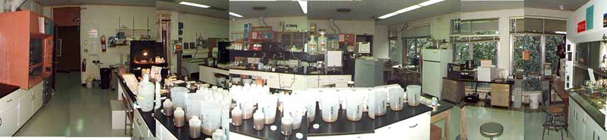

Clay Mineralogy at the University of Georgia

Clay minerals research and teaching clay mineralogy have had a long history at the University of Georgia. Opportunities in clay minerals research began in early 1960's with arrival of Vernon J. Hurst. Since then, clay mineralogy has been applied in the fields of Geology, Agronomy, Forestry, Microbiology, and Ecology. Please follow the links below to learn more about the faculty, students, courses, research facilities, and degree opportunities available through the University of Georgia.
- UGA Clay Science researchers
- Clay Science Research facilities
- Student Clay Science research
- Courses related to Clay Science
- Regional Clay Science groups, facilities, and resources
For further information call or e-mail:
Dr. Paul A. Schroeder, Professor of Clay Mineralogy
706-542-2384 or room 329 (3rd floor Geology and Geography Building)
e-mail schroe@uga.edu